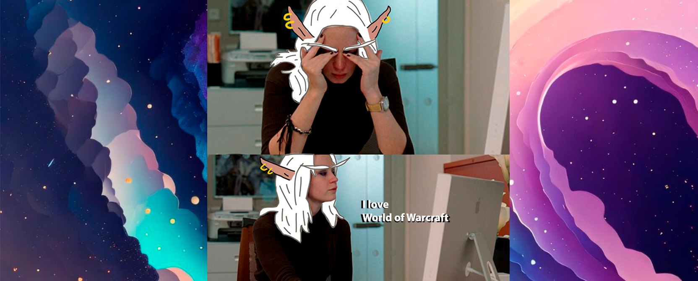
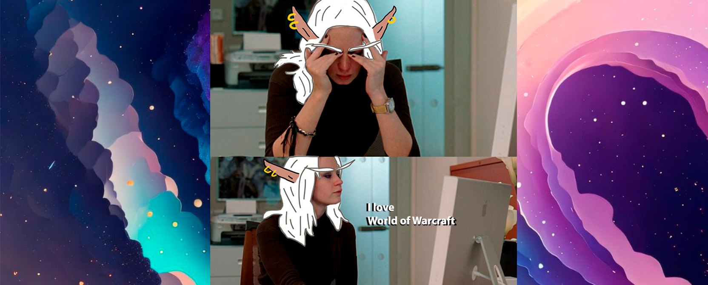

Who is the Brazilian refugee in Moon Guard...
My name is Yasmine Lima, I'm Brazilian, 33y, bisexual and married for 10 years in a non-monogamous relationship.
I am a reasonably communicative person and I love making friends and although English is not my native language, I can communicate reasonably well. I can understand speeches and texts without difficulty, but I don't have practice with writing and speech... but nothing that google translete can't help me with.
The creative heart of the character...
Apparently, for the rest of the world, I can be considered as "emotional" cuz I like to express my affection in words. It's common to see me calling someone darling, sweetness, baby, etc... Which doesn't mean that I want some intimate contact.
I'm also a big fan of erotic short stories, explicit and non-explicit, I even like to write them. And on this point I need to be very specific: If I haven't been intimate with you, please don't bring up sexual topics with me.
It's ok for you to compliment my short stories, my writing and even mention specific parts but please don't harass me personally.
I'm very strict about respecting other people's choices and boundaries and i def do not give up my individuality.
Also: I don't hide who I am.
As a Wow player...
In WoW I like PvE and RP content! Feel free to walk up with me and invite me to m+!
I was transferred from the Azralon Server, where at the end of the BFA score I got enough IO to finish among the top DPS on the server, playing as Rogue. I've been RL of core M (without much success, sylvanas raid 6/10M) and I've already got some CE's playing in guilds on the server.
I got tired of DPS life due to the delay in getting groups on lfm and decided to tank. I don't have much experience with the role (7 months max) but I do it reasonably well. I can easily make 20+ stones if I have a nice group.
Feel free to walk up with me and invite me to m+!